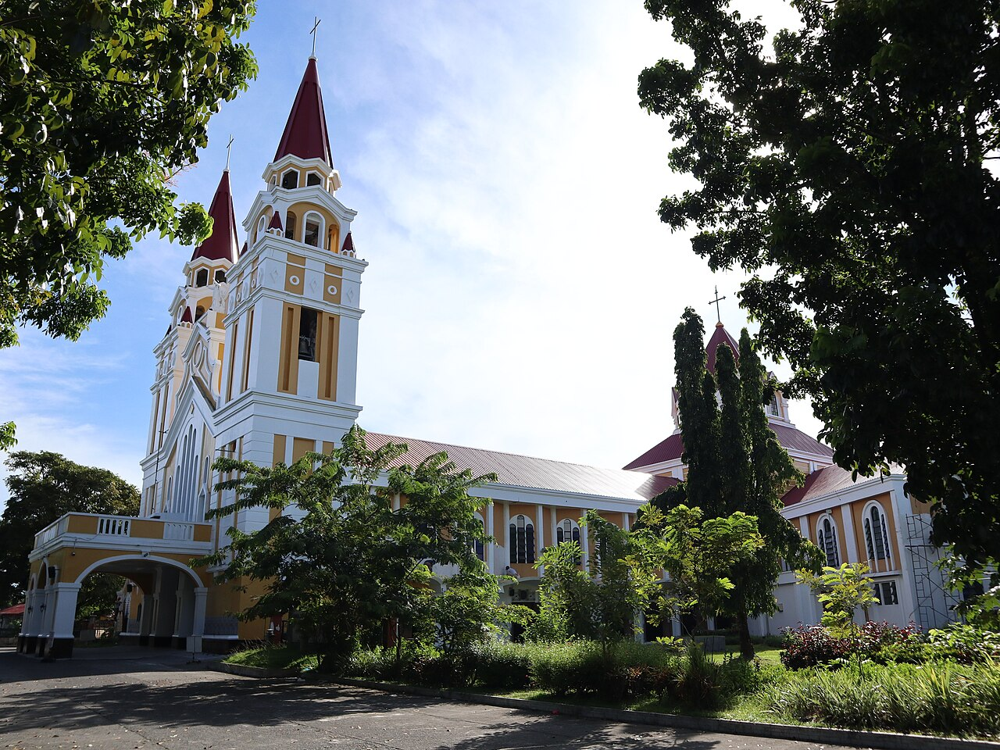

Standing as a symbol of faith and resilience, Palo Metropolitan Cathedral is one of the most important religious landmarks in Leyte. Located in the town of Palo, this historic cathedral has witnessed centuries of devotion, conflict, and recovery, making it not only a place of worship but also a powerful reminder of the region’s enduring spirit.

Also known as the Metropolitan Cathedral of Our Lord’s Transfiguration, Palo Metropolitan Cathedral serves as the ecclesiastical seat of the Archdiocese of Palo. Originally built during the Spanish colonial period, the cathedral has undergone several reconstructions due to damage from natural disasters and wartime events, including World War II. Despite these challenges, it has remained a central place of worship for the local community.
Beyond its religious significance, the cathedral also played an important role in history. It served as a refuge for civilians during wartime and stands near the site of the historic return of Douglas MacArthur in 1944. In recent years, it gained international attention when Pope Francis visited the cathedral in 2015 to offer prayers for the victims of Typhoon Haiyan, further cementing its importance as a place of hope, healing, and faith.

Palo Metropolitan Cathedral dates back to the Spanish colonial era and has been rebuilt multiple times.
It is the seat of the Archdiocese of Palo, making it a major religious center in Eastern Visayas.
The cathedral is located near MacArthur Landing Memorial National Park, linking it closely to Leyte’s historical events.